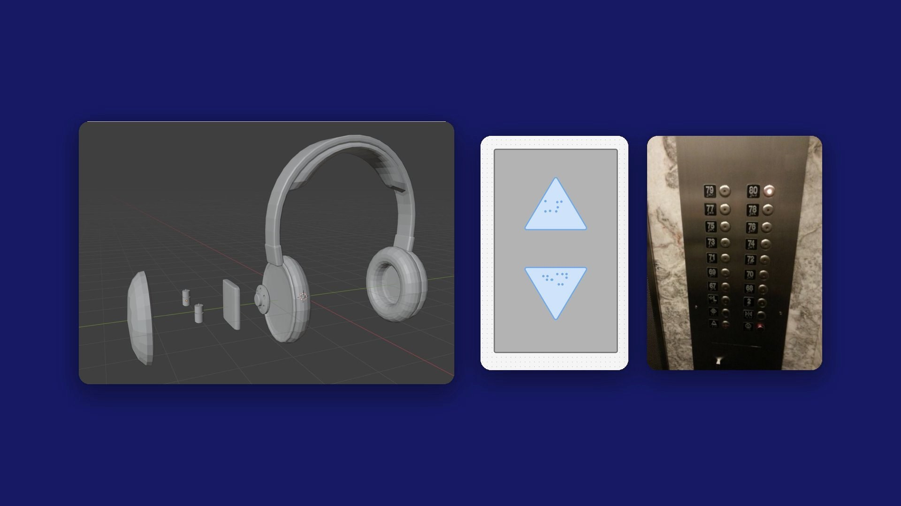
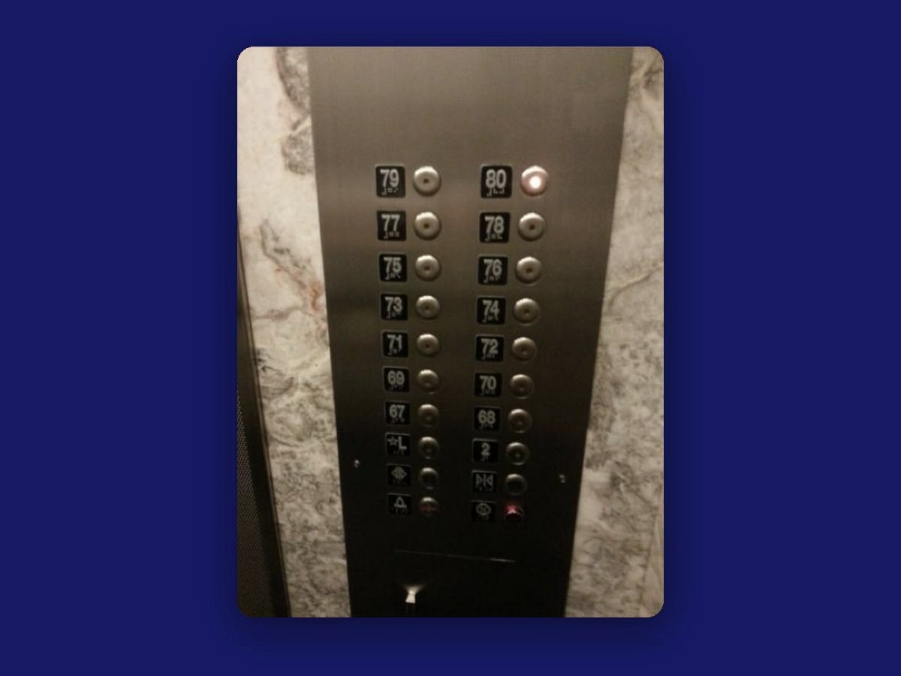
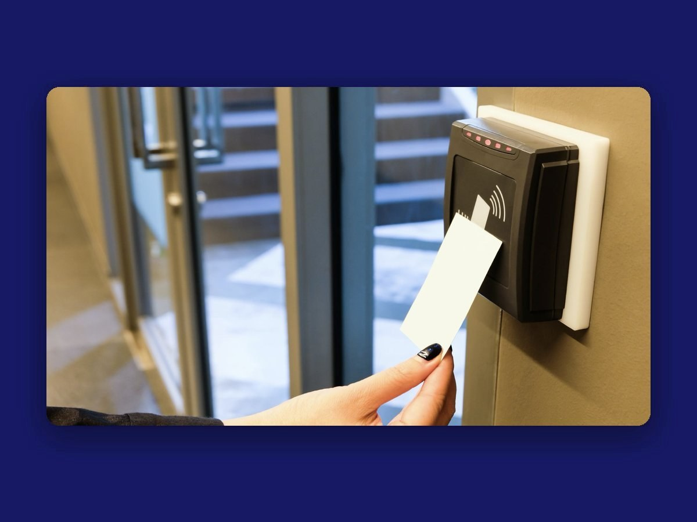
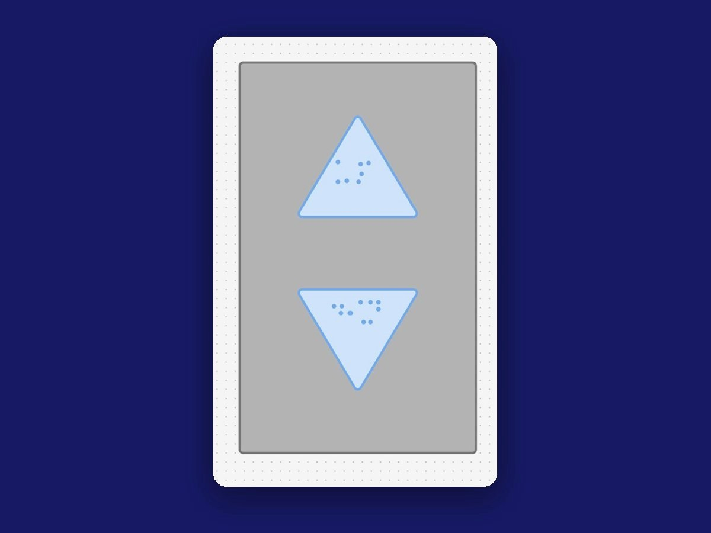
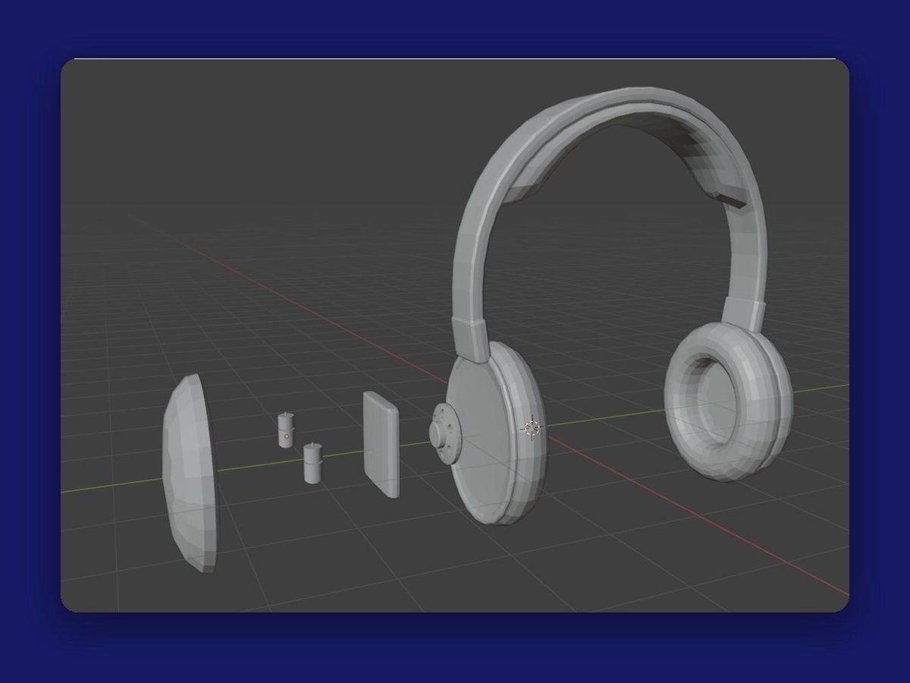
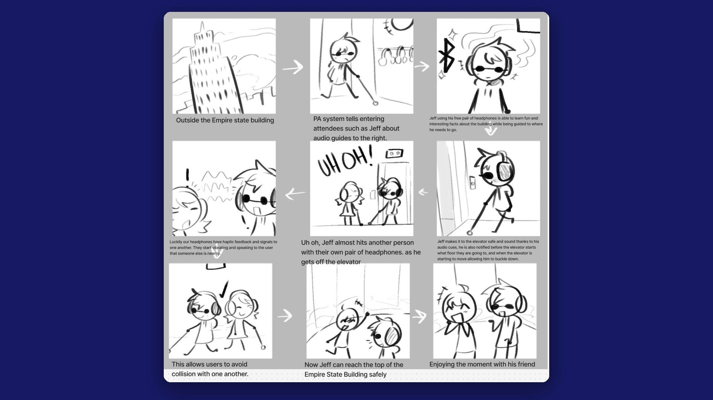
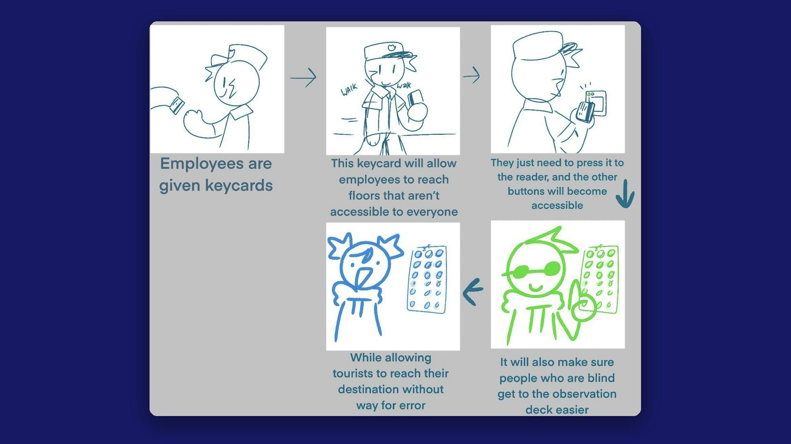

TEAM PROJECT • ACCESSIBILITY & INCLUSIVE DESIGN • MARCH 2025
Elevator Accessibility
Most of us never think twice about riding an elevator. For someone who is blind or has low vision, a packed elevator in the Empire State Building can mean hunting for buttons and guessing which floor they're on. We designed ways to help them ride on their own, with confidence.

- Role
- Accessibility & Interaction Designer
- Team
- 4 people: Pj Jones, Jackson Lux, Neal Tembe, and me
- Timeline
- March 2025, Interaction Design I
- Research
- An interview with a person with low vision, secondary research
- Deliverables
- 3 concepts, a call-button mockup, a 3D headphone model, 2 storyboards
- My contributions
- Research, storyboarding, and team discussions about what worked and what didn't
Overview
Problem
Imagine stepping into an elevator you can't see. The buttons are hard to find, there's barely any sound telling you what floor you're on, and when the car is packed you can't even reach the braille. At the Empire State Building, where crowds of tourists ride up to the observation decks every day, the elevators technically meet ADA requirements, but they weren't designed with visually impaired riders in mind.
Goal
Help visually impaired riders get where they're going on their own, without the guesswork, whether they work in the building every day or are visiting for the first time. We explored personalized keycards, audio guidance, and better tactile buttons to get there.
Impact
This was a class concept, so there's no usage data. See “What I’d test next” below.
Research
We started by learning how visually impaired people actually find their way through an elevator today, one step at a time. Then we looked closely at the Empire State Building itself: who rides its elevators, where they're going, and what's already there to help.
How people find their way today
- Find the recess in the wall where the elevator is, then feel along either side for the call buttons.
- Those buttons usually have no special markings. There are just two of them, one for up and one for down.
- Inside, check either side of the door for the button panel, then read the braille to find your floor.
- Floor buttons are usually split into two columns, evens and odds.
- Finally, check the braille outside the door to make sure you got off on the right floor.
The Empire State Building
- Three floors are for tourists: the 80th, the 86th, and the 102nd.
- It's ADA compliant and welcomes service animals, but it isn't especially focused on accessibility.
- From our research, the elevators seem to use a touch interface.
- The tourist elevators give audio info and play a video on the ceiling, an experience built around seeing.
What's there now, and where it falls short
- There's braille, hand guards, and an elevator attendant, but the attendant presses the button and then isn't in the car for the whole ride.
- With how packed these elevators get, the braille can be hard to reach at all.
- There's a little audio, like a chime when you arrive, but not enough to really know where you are.
Those buttons though, I hate ’em. Sometimes they feel a bit wishy washy. I know they’re old, but they ain’t for me.
Interviewee with cataracts and glaucoma, on elevator buttons

Learning from other tools
We also looked at tools that already help visually impaired people through sound and touch. One study used a haptic wristband to guide people, and it got us thinking about putting that kind of guidance into headphones instead. The other haptic navigation devices we found worked, but they were too bulky to wear every day, which pushed us toward something lighter. An article on navigation aids that use more than one sense convinced us to pair audio cues with vibration.
Insights
Walking through an elevator ride step by step, the way a blind or low-vision rider does it today, showed us where it breaks down.
Insight 01
The first hurdle is finding the button.
Call buttons are usually two plain, unmarked buttons you have to feel for along the wall.
So we redesigned them as arrows, so you can feel which way is up.
Insight 02
In a crowd, braille is out of reach.
The tourist elevators get packed, and the braille panel can be impossible to get to.
So employees' keycards can select their floor for them, with no panel needed.
Insight 03
The ride is built around seeing.
Tourist elevators play a video on the ceiling, and the little audio there is, like an arrival chime, isn't enough to know where you are.
So every floor gets announced out loud, and tourists can pick up audio-guide headphones.
Design decisions
The Empire State Building serves two very different groups: people who work there and ride the same elevators every day, and tourists who are visiting once. A single fix wasn't going to work for both.
So we designed three pieces: a keycard for employees, headphones for tourists, and small changes to the elevator itself that help everyone, device or not.
Employee RFID keycards
- Employees already carry keycards to get into the building and onto certain floors.
- Each card could hold a personal profile with language settings, favorite floors, and accessibility features.
- Those features could include voice guidance, doors that close more slowly, and automatic floor selection, so there's no searching for buttons or wondering what floor you're on.

Small changes to the elevator itself
- Swap the round call buttons for arrow-shaped ones, so you can feel which way is up.
- Keep the classic, familiar buttons with braille, and add a digital pad that responds to the RFID cards.
- Announce each floor out loud, so you always know where you are.
The catch: these changes broaden the scope of the project, and there are edge cases we'd still need to work through.

Tourist headphones
- A Bluetooth system that plays audio guidance when you reach certain spots in the building.
- A comfortable, open-back design, so you can still hear what's going on around you.
- An adjustable fit for all different head sizes and shapes.
- Parts that swap out quickly, for easy repairs and cleaning between visitors.
- A vibration when you get close to someone else wearing a pair, so you don't bump into each other.
The catch: they only make sense in the busiest parts of the building, and they could be a problem for someone who also has trouble hearing.

Process
We storyboarded both ideas to see how they'd feel from the rider's side.
Storyboard: Jeff and the headphones

- Jeff arrives at the Empire State Building.
- As he walks in, the PA system tells visitors about the audio guides to the right.
- With his free pair of headphones, Jeff hears fun facts about the building while it guides him where he needs to go.
- His audio cues get him to the elevator safely. They also tell him which floor it's heading to, and warn him right before it starts moving so he can steady himself.
- Uh oh. Getting off the elevator, Jeff almost walks into someone else wearing headphones.
- Luckily, the headphones can sense each other. They vibrate and let each person know someone is close.
- So they avoid bumping into each other.
- Now Jeff can reach the top of the Empire State Building safely.
- He gets to enjoy the moment with his friend.
Storyboard: the RFID keycard

- Employees are given keycards.
- The keycard lets them reach floors that aren't open to everyone.
- They just tap it on the reader, and the other buttons unlock.
- It also makes it easier for people who are blind to get to the observation deck.
- And tourists can reach their floor without any room for error.
Outcome
Our concept brings three pieces together, so help is there whether you work in the building or are visiting for the day:
Tourist headphones
Audio guidance through the building, floor announcements in the elevator, and a vibration when another wearer is close.
A friendlier panel
Arrow-shaped call buttons you can feel, classic braille buttons, and every floor announced out loud.
Personalized keycards
Tap your card and the elevator loads your settings: your language, your floor, voice guidance, and slower doors.
What I’d test next
I'd start by testing the arrow call buttons and floor announcements with blind and low-vision riders, using a cardboard or 3D-printed panel and a recorded voice. I'd watch whether people can find the right button by touch alone, and whether each announcement comes early enough to act on. Our interviewee called today's buttons “wishy washy,” so how a button feels when you press it is worth testing on its own. I'd also try the headphone vibration with someone who has both vision and hearing loss, since that's who our concept serves least.
Reflection
We wanted visually impaired riders to be able to step into an elevator and get where they're going on their own, with confidence. Pairing sound, vibration, and personalized keycards showed us that accessible design and modern design don't have to be separate things.
Every idea came with a catch. Headphones don't help someone who also has trouble hearing, and changing the elevator itself opens up edge cases. Designing for more than one kind of person meant we needed more than one answer. The small, everyday moments most people never think about are exactly where good design can make the biggest difference.
We talked with one person with low vision, but we never brought our ideas back to blind or low-vision riders to test them. If this project continued, that would be the first step: sitting down with the people it's meant for and letting them shape it. Nothing about us without us.